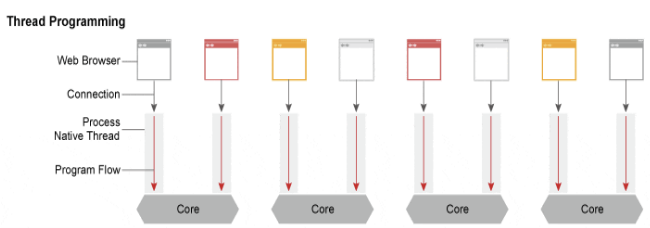
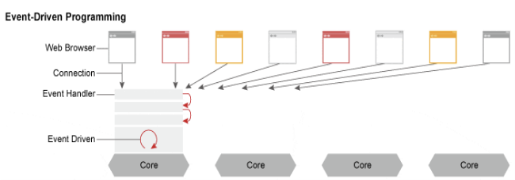

2주에 걸쳐 서버 프로그램으로 Apache와 Nginx를 설치해서 사용해봤다. 두 가지 프로그램이 전체 웹 서비스의 반 이상을 차지할 정도로 폭넓게 사용된다고 하니 어떤 차이점이 있는지 궁금해졌다.
Apache
http 웹 서버의 대명사라고 불리는 아파치는 MPM(Multi Processing Module : 다중처리모듈) 방식으로 요청을 처리한다.
스레드/프로세스 기반 구조

스레드/프로세스 기반 구조는 기본적으로 한 개의 스레드가 한 개의 요청만을 처리하는 구조이다. 사용자가 늘어날수록 많은 스레드를 생성해 메모리나 CPU 소모가 증가한다. 대표적으로 prefork와 worker 방식이 있다.
Prefork MPM
- 실행 중인 프로세스를 복제하여 처리하는 방식
- 각 서버 프로세스는 한 번에 하나의 요청만 처리, 요청량이 많아질수록 프로세스를 복제하여 동작
PHP환경에서 권장되는 방식
Worker MPM
- 한 개의 프로세스가 여러 개의 스레드를 사용하여 요청 처리
- 메모리 소모가
prefork방식보다 적어 통신량이 많을 때 유리
아파치는 연결할 때마다 새로운 프로세스나 스레드가 필요하다. 따라서 이러한 접속 요청이 많아질 경우 대용량 요청을 처리할 수 있는 웹 서버로서의 한계를 보여준다.
Nginx
비동기 Event-Driven 기반 구조로 다수의 연결을 보다 더 효과적으로 처리할 수 있다. 즉, 단일 nginx 작업자가 동시에 수천 개의 요청을 처리할 수 있다.
비동기 Event-driven
 요청을 수행하는 도중 CPU가 관여하지 않는 작업(I/O, socket R/W 등)이 시작되면 기다리지 않고 바로 다른 요청을 수행한다. 그렇기 때문에 하나의 프로세스로 더 빠른 작업이 가능하며 메모리 측면에서 동시 접속 요청이 많아져도 효율적으로 처리할 수 있다.